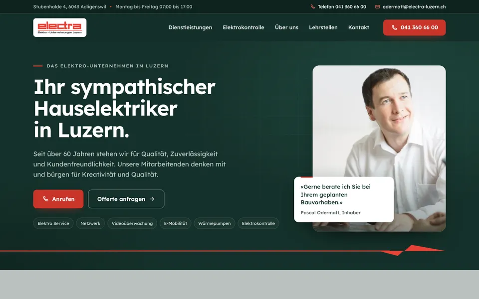
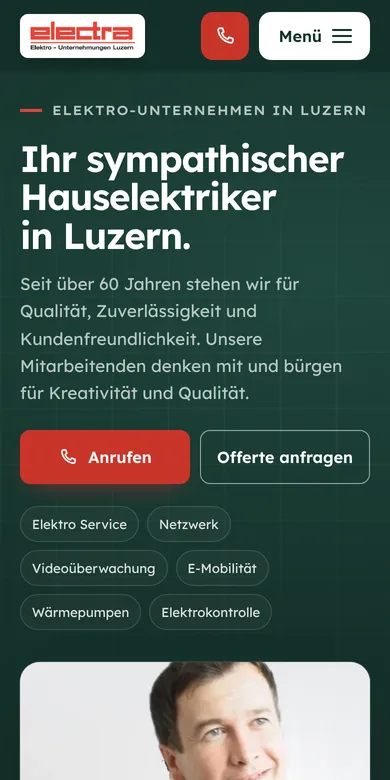

Design A
Für alles mit Strom
Ihr heutiger Auftritt, konsequent weitergedacht: Tannengrün als tragende Fläche, weisse Schrift und Ihr Electra-Rot als Signal. Im ersten Bild steht Pascal Odermatt mit seinem Satz zur Beratung, darunter zieht sich die rote Linie aus Ihrem Logo über die ganze Breite bis zum Blitz-Pfeil. Ihr Slogan steht gross auf dem grau-grünen Band. Danach folgen Ihre sechs Kernaufgaben mit eigenen Symbolen, die Elektrokontrolle in vier Schritten bis zum Sicherheitsnachweis, über 60 Jahre Electra, Ihre Lehrstellen und der Kontakt.
- Tannengrün und Rot
- Logo-Linie
- Ablauf Elektrokontrolle